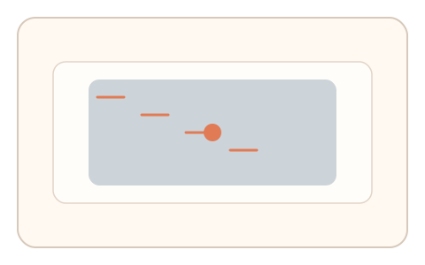
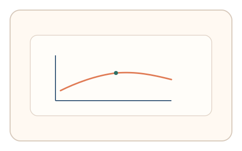

#47
视觉思考范式：时域/适应/残影
已扩展
运动诱导消失
静止目标置于动态背景中，记录目标消失与再出现的时序作为运动诱导消失信号。
概念原文
静止目标叠加动态背景，用户点击“目标消失/再出现”的瞬间；记录时间分布与点击策略。
基于人类运动诱导消失的时序特征。
研究背景
运动诱导消失会让静止目标在动态背景中暂时消失，消失与再出现的时间分布具有稳定规律。测量点击时序与策略可形成可重复的行为特征。
核心机制
- 静止目标叠加在动态背景之上。
- 用户点击目标消失或再出现的瞬间。
- 记录点击时间分布与策略。
- 分析消失-再出现的周期特征。
用户流程
- 步骤 1：用户观察静止目标与动态背景。
- 步骤 2：目标消失或再出现时点击。
- 步骤 3：系统统计时序并判定。
判定信号
消失与再出现的时间分布
运动诱导消失呈现典型的时间节律。
点击策略与等待间隔
真实判断会出现稳定的等待与确认模式。
判定逻辑
拟合消失-再出现时间分布并结合点击策略；过度固定或异常快速判异常。
对抗面
- 脚本读取运动状态并固定时刻点击
- 重放真实用户的点击序列
防御与缓解
- 随机化背景运动方向与速度
- 引入轻微噪声与局部扰动降低模板化
- 叠加鼠标轨迹与微时序信号进行多信号验证
可达性与风险
提供更慢运动或替代任务，避免对运动敏感用户造成不适。
- 动态背景可能引起眩晕
- 显示设备刷新率影响消失周期
可视化状态

状态 1：动态背景
静止目标叠加在运动背景上。
状态 2：消失点击
目标消失或再出现时点击。

状态 3：时序判定
分析消失周期与点击节奏。
参考资料
Motion-induced blindness
说明运动诱导消失现象。
Motion perception
说明运动知觉与背景干扰。